A game about convincing people, made for the age group least convinced. Lisa has six in-game days to talk twelve neighbours of Tenang into making a Lasting Power of Attorney.
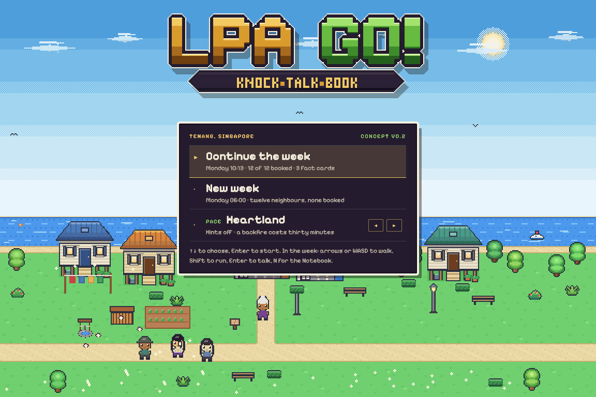
From the intro video to the kampung. The Lisa who hosts the intro video is the character the player controls: same dark hair, same light top, same lanyard.
What she does. She walks Tenang, reads the hints neighbours drop 3 and picks what to say. She persuades and refers. She never certifies.
Where she starts. Her house in Kampung Ketapang, Monday 06:00. Her doorstep is the save point.
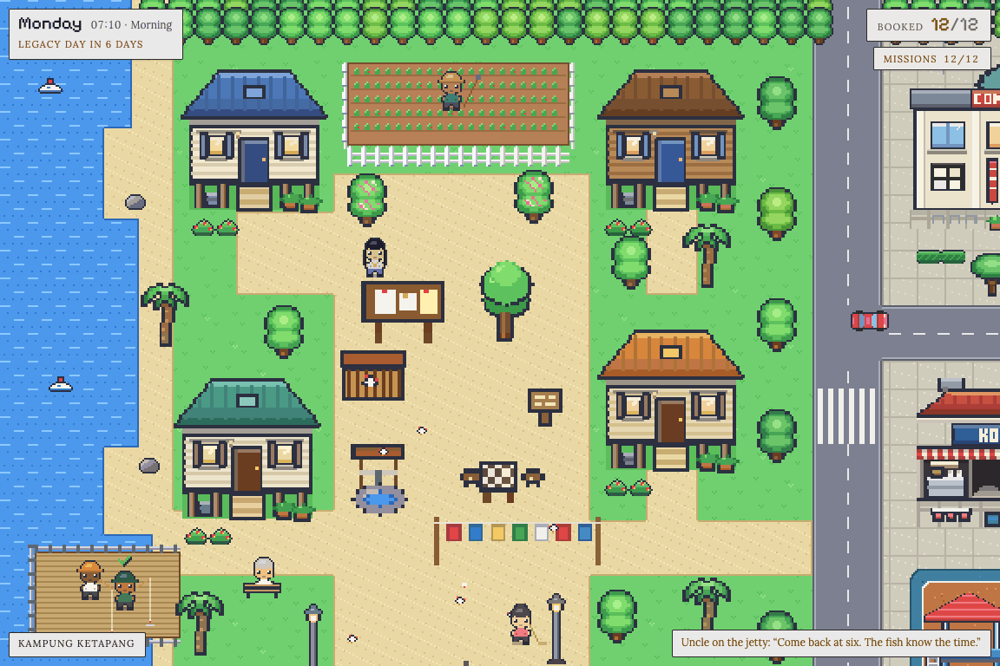
Two halves. Kampung Ketapang by the lake, and Tenang town centre across Route 1, with ten interiors to walk into 2.
Routines. Every neighbour keeps a timetable by phase. Stanley reads in the library in the morning and drinks kopi in the evening. Find him; he will not wait.
The clock. One in-game day is six real minutes 1. It runs while Lisa walks and pauses for every conversation and every Notebook page.
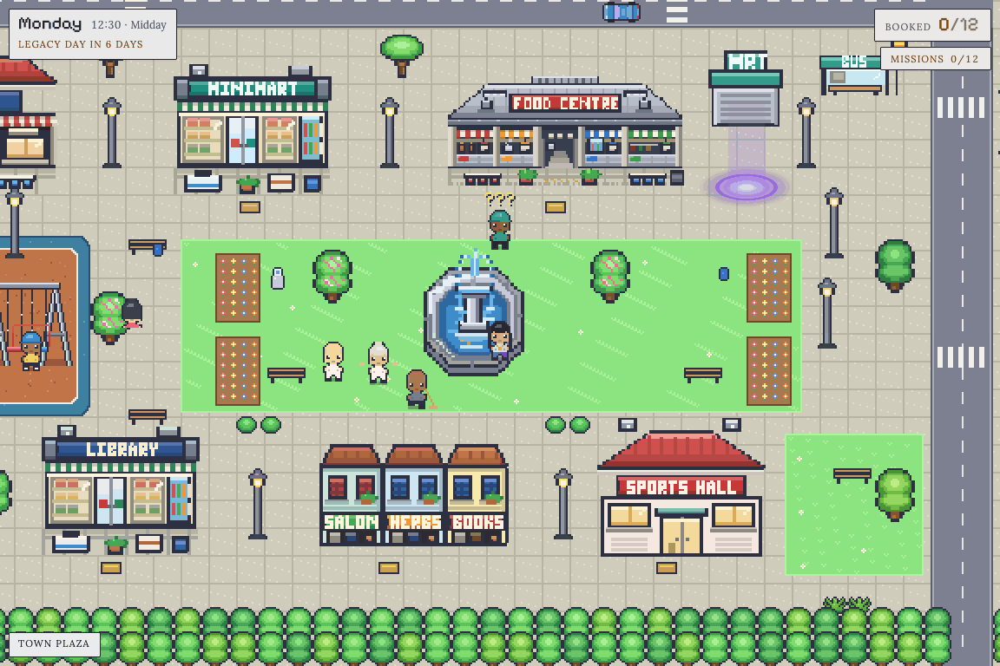
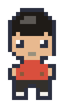
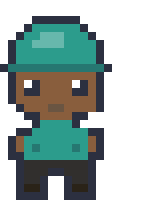
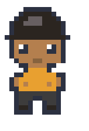
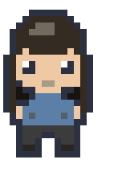
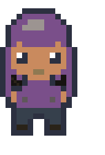
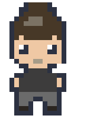
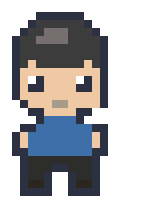
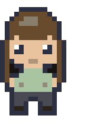
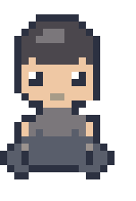
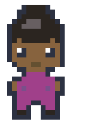
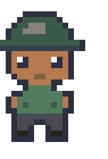
The Doubt. Andy’s first of three: LPA is for old people. The clock is paused while the player reads.
Convince. Accurate, and it answers the feeling. The Doubt clears and a Fact Card goes into the Notebook.
Neutral. True, but off the point: the ageing statistics answer a question Andy did not ask. Nothing changes; find him next phase.
Backfire. A myth, here that a donee could “pull the plug”, which section 13(8) forbids. Andy walks off and Lisa loses thirty minutes.
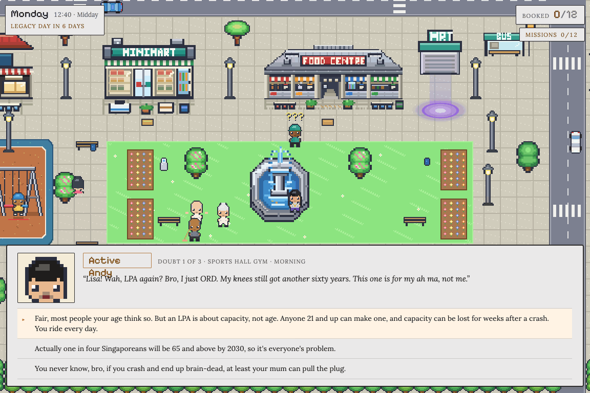
One point of law each. Plain words first, then the source 3: the section of the Mental Capacity Act and the part of the guide where it is written.
Unlocked by playing. A card appears 2 only when a reply has worked, a game has been played to the end, or a story event has happened. The rest stay locked 4.
Numbered like the collaterals. Cards cite Guide B4, Donee’s Guide C3, Quick Reference Guide Form 1 step 13: the section numbers of 1.1 to 1.3, so a player can find the full text.
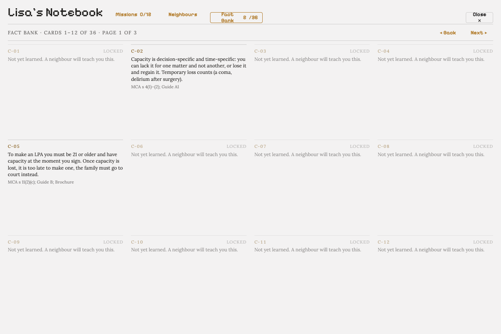
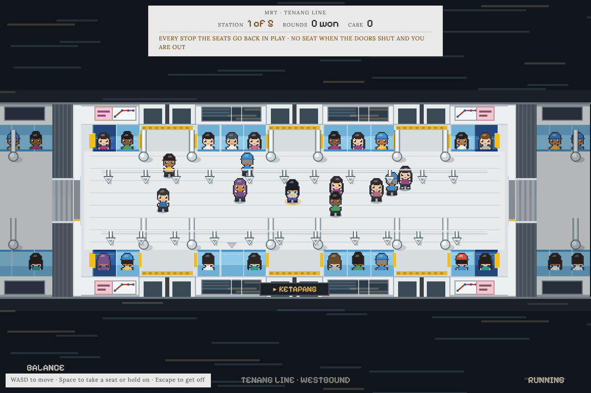
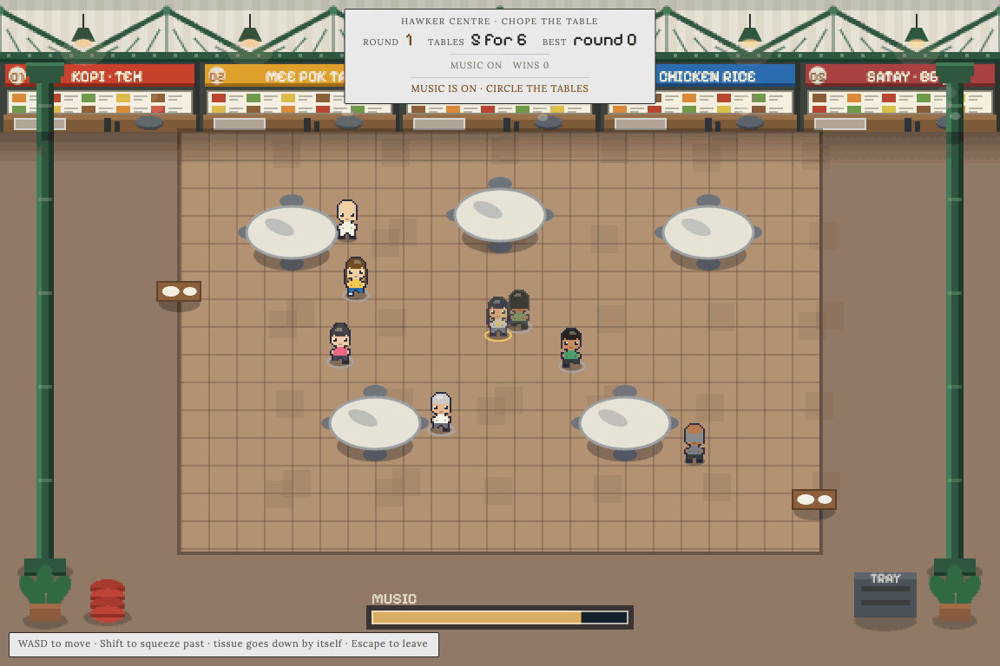
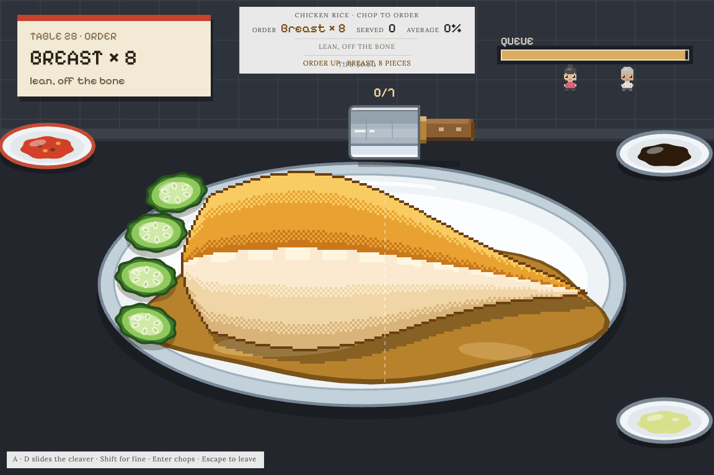
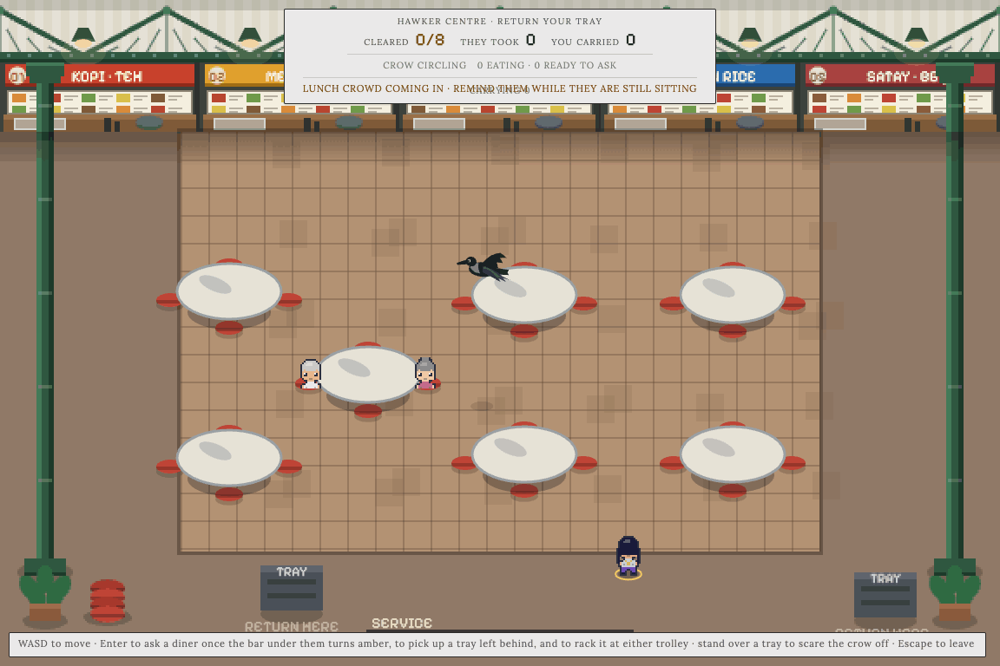
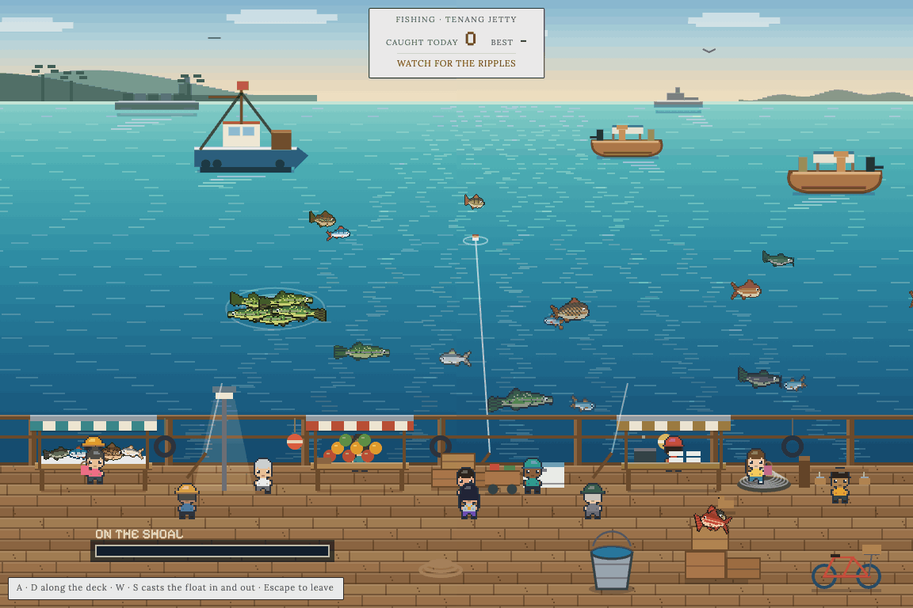
Wednesday evening. Uncle Tan collapses at the plaza 2. At the hospital Lisa hears the family told that the bank needs a court order, because there is no LPA. Fact Card C-21 3.
Thursday morning. A Fate Event. One unbooked neighbour, odds weighted by age, is certified overnight as lacking capacity. Too late for an LPA.
Friday night. Ah Gong’s letter. Lisa’s mother shows her the deputyship papers for her grandfather. “We never knew what Pa wanted.” Fact Card C-13.
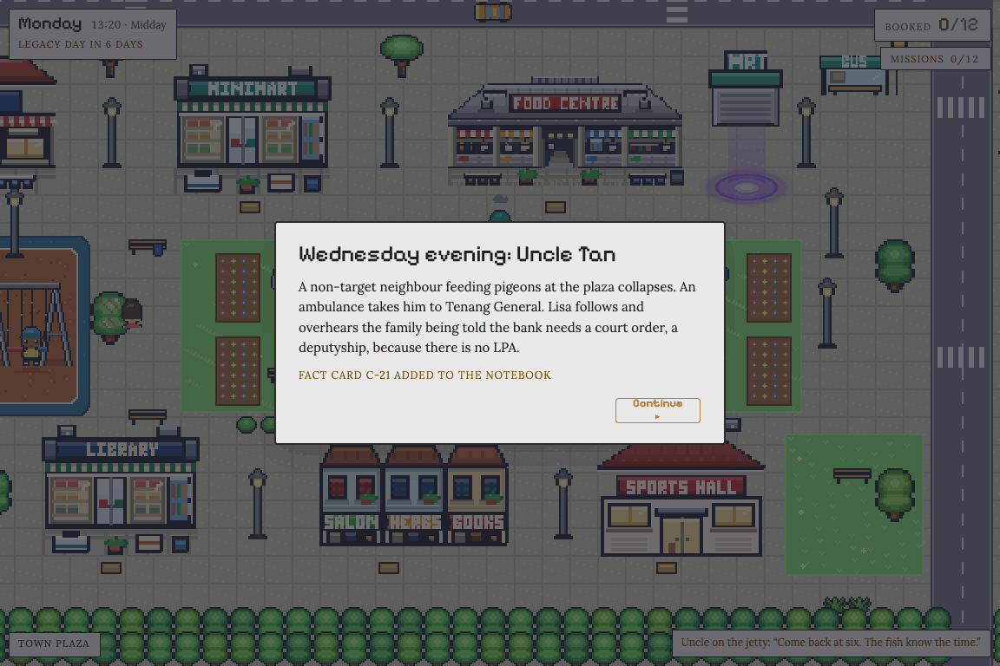
Sunday 09:00, Tenang Community Club. The roadshow runs with whoever is booked. The tier reached 1 follows the count.
No game over. Wrong answers cost time, never the game. A neighbour not convinced gets an epilogue line instead of a tick. Statuses 2 show where each LPA stands.
Each tick says how. Andy appointed his mum and sister jointly and severally 3. Hafiz ticked the box requiring the court’s approval to deal with the flat. Fauzi named a replacement donee.
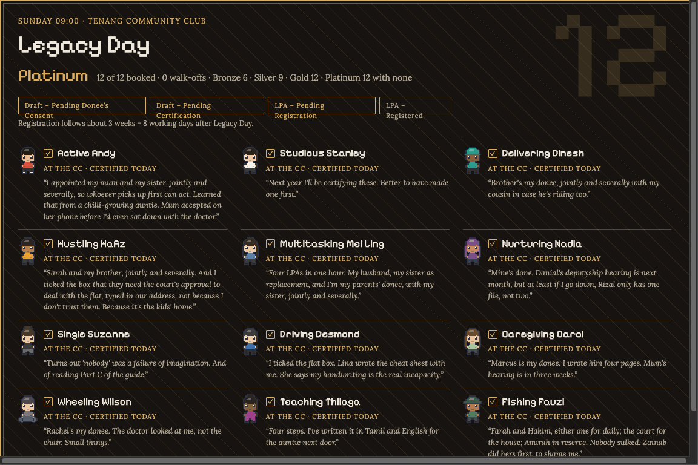